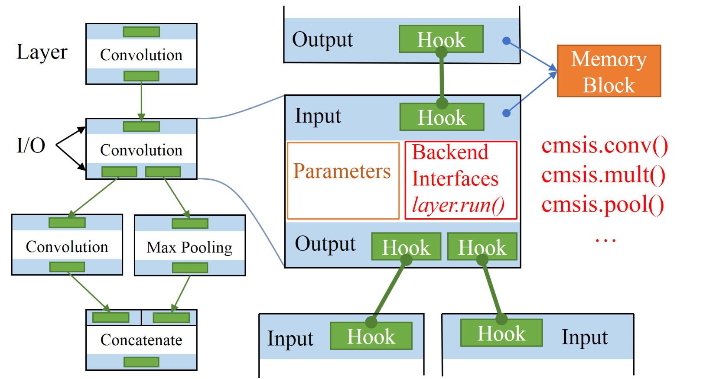

Development Guide
Currently, it is not yet a "guide". At least, it provides some further information.
Frequent Questions and Answers (Q&A)
What is NNoM different from others?
NNoM is a higher-level inference framework. The most obvious feature is the human understandable interface.
-
It is also a layer-based framework, instead of operator-based. A layer might contain a few operators.
-
It natively supports complex model structure. High-efficiency network always benefited from complex structure.
-
It provides layer-to-layer analysis to help developer optimize their models.
Should I develop an ad-hoc model or use a pre-trained model?
The famous pre-trained models are more for the image processing side. They are efficient on such mobile phones. But they are still too bulky if the MCU doesn't provide at least 250K RAM and a hardware Neural Network Accelerator.
MobileNet V1 model with depth multi-plier (0.25x) ... STM32 F746 ... CMSIS-NN kernels to program the depthwise and pointwise convolutions ... approximately 0.75 frames/sec
Source: Visual Wake Words Dataset
In most cases, MCUs should not really do image processing without hardware accelerator. The data they normally process a few channels of time sequence measurement. For example, the accelerometer data consist of 3-axis (channel) measurement per timestamp.
Dealing with these data, building the ad-hoc models for each application is the only option.
Building an ad-hoc model is sooo easy with NNoM since most of the codes are automatically generated.
What can NNoM provide to embedded engineers?
It provides an easy to use and easy to evaluate inference tools for fast neural network development.
As embedded engineers, we might not know well how does neural network work and how can we optimize it for the MCU. NNoM together with Keras can help you to start practising within half an hour. There is no need to learn other ML libs from scratch. Deployment can be done with one line of python code after you have trained a model using Keras.
Other than building a model, NNoM also provides a set of evaluation methods. These evaluation methods will give the developer a layer-to-layer performance evaluation of the model.
Developers can then modify the ad-hoc model to increase efficiency or to lower the memory cost. (Please check the following Performance sections for detail.)
NNoM Structure
As mentioned in many other docs, NNoM uses a layer-based structure. The most benefit is the model structure can seem directly from the codes.
It also makes the model conversion from other layer-based libs (Keras, TensorLayer, Caffe) to NNoM model very straight forward. When use generate_model(model, x_test, name='weights.h') to generate NNoM model, it simply read the configuration out and rewrite it to C codes.
Structure: 
NNoM uses a compiler to manage the layer structure and other resources. After compiling, all layers inside the model will be put into a shortcut list per the running order. Besides that, arguments will be filled in and the memory will be allocated to each layer (Memory are reused in between layers). Therefore, no memory allocation performed in the runtime, performance is the same as running backend function directly.
The NNoM is more on managing the higher-level structure, context argument and memory. The actual arithmetics are done by the backend functions.
Currently, NNoM supports a pure C backend and CMSIS-NN backend. The CMSIS-NN is a highly optimized low-level NN core for ARM-Cortex-M microcontroller. Please check the optimization guide for utilisation.
Quantisation
NNoM currently only support 8bit weights and 8bit activations. The model will be quantised through model conversion generate_model(model, x_test, name='weights.h').
The input data (activations) will need to be quantised then feed to the model.
Please see any example for quantising the input data.
Optimization
The CMSIS-NN can provide up to 5 times performance compared to the pure C backend on Cortex-M MCUs. It maximises the performance by using SIMD and other instructions(__SSAT, ...).
These optimizations come with different constraints. This is why CMSIS-NN provides many variances to one operator (such as 1x1 convolution, RGB convolution, none-square/square, they are all convolution only with different routines).
NNoM will automatically select the best operator for the layer when it is available. Sometimes, it is not possible to use CMSIS-NN because the condition is not met. CMSIS-NN provides a subset operator to the local pure C backend. When it is not possible to use CMSIS-NN, NNoM will run the layer using the C backend end instead. It varies from layer to layer whether to use CMSIS-NN or C backend.
The example condition for convolutions are list below:
| Operation | Input Channel | Output Channel |
|---|---|---|
| Convolution | multiple of 4 | multiple of 2 |
| Pointwise Convolution | multiple of 4 | multiple of 2 |
| Depthwise Convolution | multiple of 2 | multiple of 2 |
The full details can be found in CMSIS-NN's source code and documentation. Some of them can be further optimized by square shape, however, the optimization is less significant.
Trick, if you keep the channel size is a multiple of 4, it should work in most of the case.
If you are not sure whether the optimization is working, simply use the model_stat() in Evaluation API to print the performance of each layer. The comparison will be shown in the following sections.
Fully connected layers and pooling layers are less constrained.
Performance
Performances vary from chip to chip. Efficiencies are more constant.
We can use Multiply–accumulate operation (MAC) per Hz (MACops/Hz) to evaluate the efficiency. It simply means how many MAC can be done in one cycle.
Currently, NNoM only count MAC operations on Convolution layers and Dense layers since other layers (pooling, padding) are much lesser.
Running a model on CMSIS-NN and NNoM will have the same performance when a model is fully compliant with CMSIS-NN and running on Cortex-M4/7/33/35P. ("compliant" means it meets the optimization condition in the above discussion).
For example, in CMSIS-NN paper, the authors used an STM32F746@216MHz to run a model with 24.7M(MACops) took 99.1ms in total.
The runtime of each layer was recorded. What hasn't been shown in the paper is this table. (refer to Table 1 in the paper)
| Layer | Input ch | output ch | Ops | Runtime | Efficiency (MACops/Hz) | |
|---|---|---|---|---|---|---|
| Layer 1 | Conv | 3 | 32 | 4.9M | 31.4ms | 0.36 |
| Layer 3 | Conv | 32 | 32 | 13.1M | 42.8ms | 0.71 |
| Layer 5 | Conv | 32 | 64 | 6.6M | 22.6ms | 0.68 |
| Layer 7 | Dense | 1024 | 10 | 20k | 0.1ms | 0.93 |
| Total | 24.7M | 99.1ms | 0.58 |
ops = 2 x MACops, total is less due to other layers such as activation and pooling, please check the paper for full table
In the table, layer 3 and 5 are both Convolution layer with input and output channel size equal to a multiple of 4. Layer 1 with input channel = 3.
You can already see the efficiency difference. When input channel = 3, the convolution is performed by arm_convolve_HWC_q7_RGB(). This method is partially optimized since the input channel is not a multiple of 4, While Layer 3 and layer 5 are fully optimized. The efficiency difference is already huge (0.36 vs 0.71/0.68).
To achieve high efficiency, you should keep both input channel is a multiple of 4 and output is a multiple of 2.
What does this number mean? You can use this number to estimate the best size of the model to fit the targeting MCU.
In typical applications:
Use motion sensor to recognise human activity. A model takes 9 channels time sequence data, 0.67M MACops, STM32F746 will take around 0.67M/0.58/216MHz = 5.3ms to do one inference.
Use microphone to spot key-word commands. A model takes 63 x 12 x 1 MFCC data, 2.09M MACops, STM32F746 will take around 2.09M/0.58/216MHz = 16.7ms to do one inference.
Notes, MACops/Hz in NNoM is less than the CMSIS-NN in the paper, this is because NNoM considers the operator and its following activation as one single layer. For example, the running time cost by the convolution layer is the time cost by
operator(Conv)+ the time cost byactivation(ReLU).
Evaluations
Evaluation is equally important to building the model.
In NNoM, we provide a few different methods to evaluate the model. The details are list in Evaluation Methods. If your system support print through a console (such as serial port), the evaluation can be printed on the console.
Firstly, the model structure is printed during compiling in model_compile(), which is normally called in nnom_model_create().
Secondly, the runtime performance is printed by model_stat().
Thirdly, there is a set of prediction_*() APIs to validate a set of testing data and print out Top-K accuracy, confusion matrix and other info.
An NNoM model
This is what a typical model looks like in the weights.h or model.h or whatever you name it. These codes are generated by the script.
In user's main(), call nnom_model_create() will create and compile the model.
...
/* nnom model */
static int8_t nnom_input_data[784];
static int8_t nnom_output_data[10];
static nnom_model_t* nnom_model_create(void)
{
static nnom_model_t model;
nnom_layer_t* layer[20];
new_model(&model);
layer[0] = Input(shape(28, 28, 1), nnom_input_data);
layer[1] = model.hook(Conv2D(12, kernel(3, 3), stride(1, 1), PADDING_SAME, &conv2d_1_w, &conv2d_1_b), layer[0]);
layer[2] = model.active(act_relu(), layer[1]);
layer[3] = model.hook(MaxPool(kernel(2, 2), stride(2, 2), PADDING_SAME), layer[2]);
layer[4] = model.hook(Cropping(border(1,2,3,4)), layer[3]);
layer[5] = model.hook(Conv2D(24, kernel(3, 3), stride(1, 1), PADDING_SAME, &conv2d_2_w, &conv2d_2_b), layer[4]);
layer[6] = model.active(act_relu(), layer[5]);
layer[7] = model.hook(MaxPool(kernel(4, 4), stride(4, 4), PADDING_SAME), layer[6]);
layer[8] = model.hook(ZeroPadding(border(1,2,3,4)), layer[7]);
layer[9] = model.hook(Conv2D(24, kernel(3, 3), stride(1, 1), PADDING_SAME, &conv2d_3_w, &conv2d_3_b), layer[8]);
layer[10] = model.active(act_relu(), layer[9]);
layer[11] = model.hook(UpSample(kernel(2, 2)), layer[10]);
layer[12] = model.hook(Conv2D(48, kernel(3, 3), stride(1, 1), PADDING_SAME, &conv2d_4_w, &conv2d_4_b), layer[11]);
layer[13] = model.active(act_relu(), layer[12]);
layer[14] = model.hook(MaxPool(kernel(2, 2), stride(2, 2), PADDING_SAME), layer[13]);
layer[15] = model.hook(Dense(64, &dense_1_w, &dense_1_b), layer[14]);
layer[16] = model.active(act_relu(), layer[15]);
layer[17] = model.hook(Dense(10, &dense_2_w, &dense_2_b), layer[16]);
layer[18] = model.hook(Softmax(), layer[17]);
layer[19] = model.hook(Output(shape(10,1,1), nnom_output_data), layer[18]);
model_compile(&model, layer[0], layer[19]);
return &model;
}
Model info, memory
This is an example printed by model_compile(), which is normally called by nnom_model_create().
Start compiling model...
Layer(#) Activation output shape ops(MAC) mem(in, out, buf) mem blk lifetime
-------------------------------------------------------------------------------------------------
#1 Input - - ( 28, 28, 1) ( 784, 784, 0) 1 - - - - - - -
#2 Conv2D - ReLU - ( 28, 28, 12) 84k ( 784, 9408, 36) 1 1 1 - - - - -
#3 MaxPool - - ( 14, 14, 12) ( 9408, 2352, 0) 1 1 1 - - - - -
#4 Cropping - - ( 11, 7, 12) ( 2352, 924, 0) 1 1 - - - - - -
#5 Conv2D - ReLU - ( 11, 7, 24) 199k ( 924, 1848, 432) 1 1 1 - - - - -
#6 MaxPool - - ( 3, 2, 24) ( 1848, 144, 0) 1 1 1 - - - - -
#7 ZeroPad - - ( 6, 9, 24) ( 144, 1296, 0) 1 1 - - - - - -
#8 Conv2D - ReLU - ( 6, 9, 24) 279k ( 1296, 1296, 864) 1 1 1 - - - - -
#9 UpSample - - ( 12, 18, 24) ( 1296, 5184, 0) 1 - 1 - - - - -
#10 Conv2D - ReLU - ( 12, 18, 48) 2.23M ( 5184, 10368, 864) 1 1 1 - - - - -
#11 MaxPool - - ( 6, 9, 48) ( 10368, 2592, 0) 1 1 1 - - - - -
#12 Dense - ReLU - ( 64, 1, 1) 165k ( 2592, 64, 5184) 1 1 1 - - - - -
#13 Dense - - ( 10, 1, 1) 640 ( 64, 10, 128) 1 1 1 - - - - -
#14 Softmax - - ( 10, 1, 1) ( 10, 10, 0) 1 1 - - - - - -
#15 Output - - ( 10, 1, 1) ( 10, 10, 0) 1 - - - - - - -
-------------------------------------------------------------------------------------------------
Memory cost by each block:
blk_0:5184 blk_1:2592 blk_2:10368 blk_3:0 blk_4:0 blk_5:0 blk_6:0 blk_7:0
Total memory cost by network buffers: 18144 bytes
Compling done in 179 ms
It shows the run order, Layer names, activations, the output shape of the layer, the operation counts, the buffer size, and the memory block assignments.
Later, it prints the maximum memory cost for each memory block. Since the memory block is shared between layers, the model only
e 3 memory blocks, altogether gives a sum memory cost by 18144 Bytes.
Runtime statistices
This is an example printed by model_stat().
This method requires a microsecond timestamp porting, check porting guide
Print running stat..
Layer(#) - Time(us) ops(MACs) ops/us
--------------------------------------------------------
#1 Input - 11
#2 Conv2D - 5848 84k 14.47
#3 MaxPool - 698
#4 Cropping - 16
#5 Conv2D - 3367 199k 59.27
#6 MaxPool - 346
#7 ZeroPad - 36
#8 Conv2D - 4400 279k 63.62
#9 UpSample - 116
#10 Conv2D - 33563 2.23M 66.72
#11 MaxPool - 2137
#12 Dense - 2881 165k 57.58
#13 Dense - 16 640 40.00
#14 Softmax - 3
#15 Output - 1
Summary:
Total ops (MAC): 2970208(2.97M)
Prediction time :53439us
Efficiency 55.58 ops/us
NNOM: Total Mem: 20236
Calling this method will print out the time cost for each layer, and the efficiency in (MACops/us) of this layer.
This is very important when designing your ad-hoc model.
For example, #2 layer has only 14.47 MACops/us, while #5, #8 and #10 are around 60 MACops/us. This is due to the input channel of #2 layer is 1, which cannot fulfil the optimisation conditions of CMSIS-NN. One simple optimization strategy is to minimize the complexity in #2 layer by reducing the output channel size.
Others
Memeory management in NNoM
As mention, NNoM will allocate memory to the layer during the compiling phase. Memory block is a minimum unit for a layer to apply. For example, convolution layers normally apply one block for input data, one block for output data and one block for the intermediate data buffer.
Layer(#) Activation output shape ops(MAC) mem(in, out, buf) mem blk lifetime
-------------------------------------------------------------------------------------------------
#2 Conv2D - ReLU - ( 28, 28, 12) 84k ( 784, 9408, 36) 1 1 1 - - - - -
The example shows input buffer size 784, output buffer size 9408, intermediate buffer size 36. The following mem blk lifetime means how long does the memory block last. All three block last only one step, they will be freed after the layer. In NNoM, the output memory will be pass directly to the next layer(s) as input buffer, so there is no memory copy cost and memory allocation in between layers.